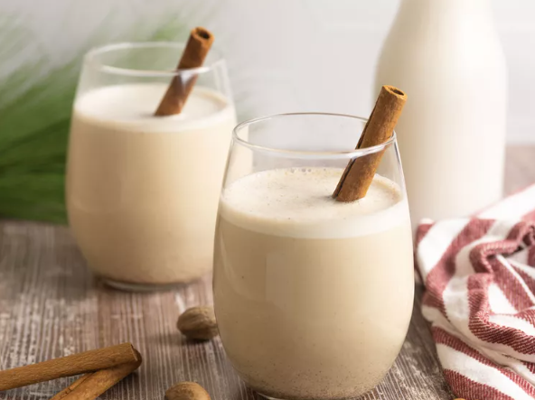

Coquito

What is Coquito?
Coquito is a traditional holiday drink that originated in Puerto Rico. In Spanish, coquito means "little coconut."
The beverage is coconut-based and spiked with rum. Rich and creamy coquito, which is often thickened with egg yolks, is similar to eggnog. In fact, sometimes it's referred to as "Puerto Rican eggnog."
Ingredients
- 1 (12 fluid ounce) can evaporated milk
- 2 large egg yolks, beaten
- 1 (14 ounce) can cream of coconut
- 1 (14 ounce) can sweetened condensed milk
- ½ cup white rum
- ½ cup water
- 1 teaspoon vanilla extract
- ½ teaspoon ground cinnamon
- ¼ teaspoon ground cloves
Steps
- Gather all ingredients.
Combine evaporated milk and egg yolks in the top of a double boiler over simmering water.
Cook over the simmering water, stirring constantly, until mixture is thick enough to coat the back of a spoon, and reaches a temperature of 160 degrees F (71 degrees C).
- Transfer mixture to a blender. Add cream of coconut, sweetened condensed milk, rum, water, vanilla, cinnamon, and cloves; blend until combined, about 30 seconds.
- Pour into sterilized glass bottles and store in the refrigerator; serve cold or over ice, if desired.